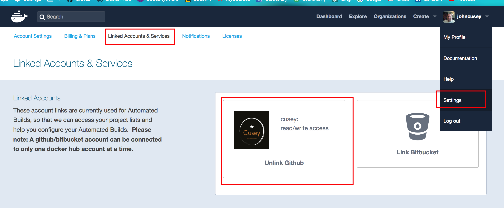
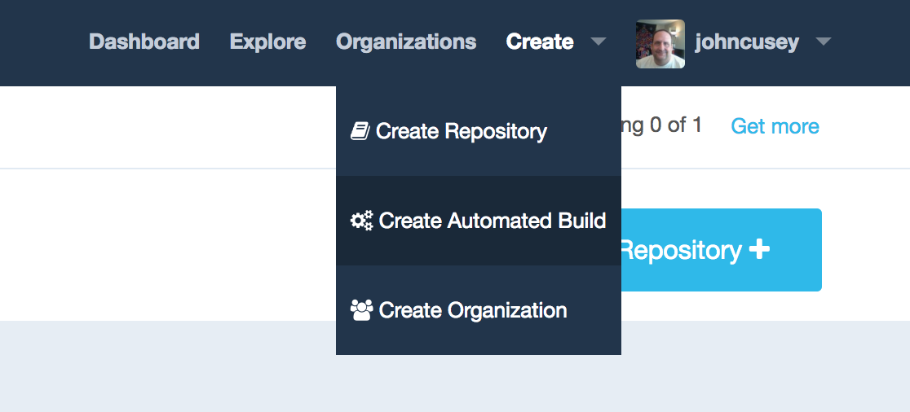
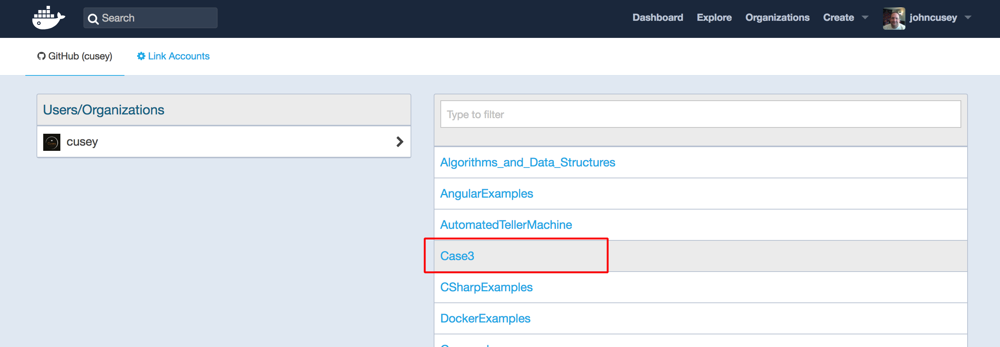
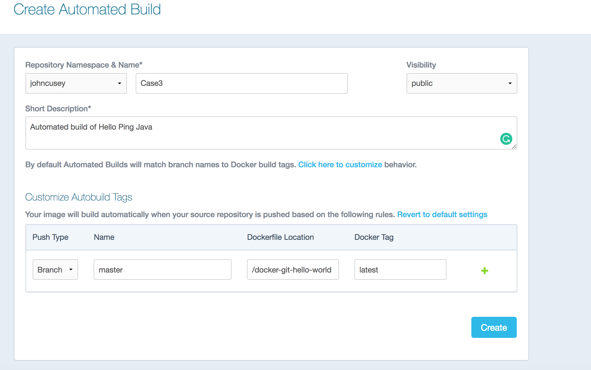
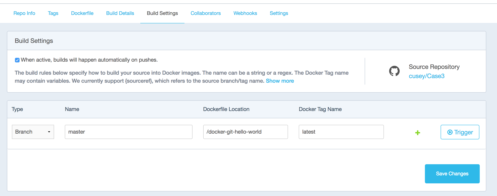
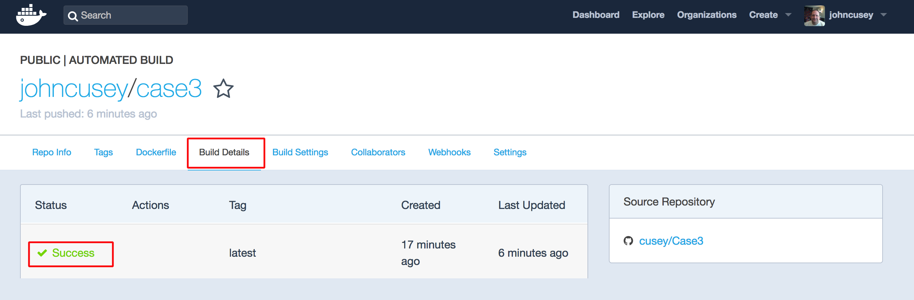

Link your DockerHub with your GitHub repository

Select Create Automated Build

Select the Github repository

Create Automated Build

Trigger Build by clicking the trigger button

See Build Details by clicking the success
